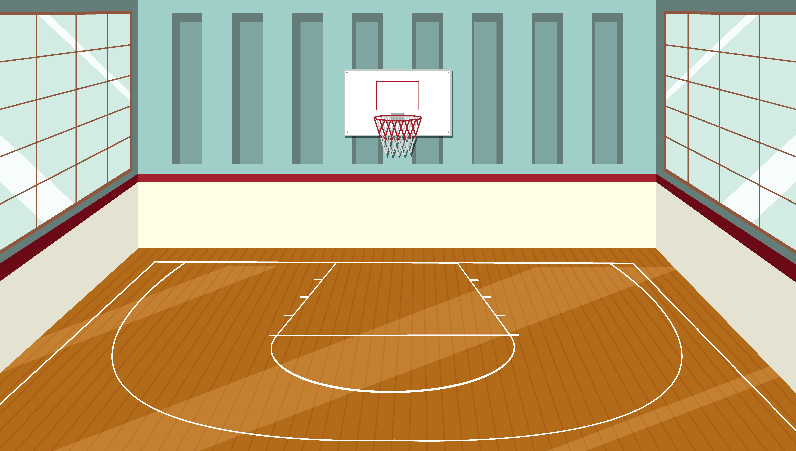

Você estava na aula de educação física e a professora Thais pediu para pegar a bola de volêi que ela tinha esquecido.
Você foi procurar a bola direto, e agora?
Você perguntou para a Thais e ela disse que acha tinha esquecido na sala de aula, então, você...
A bola não estava lá

Ela não quis saber do seu paradeiro e apenas te deixou com nota baixa pelo vacilo.
Parabéns!!! Você encontrou a bola.
Após você enrolar um pouco no banheiro, aparece um outro aluno te procurando a pedido da Thais, e juntos, vocês vão conferir se a bola está na sala de aula.
Você junto com o seu colega, acham a bola e retornam para a quadra, lá, a Thais reclama de sua demora mas agradece a ajuda.